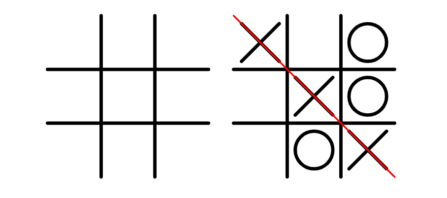

Lab 4 - Psuedocoding and Probelm-Solving
Pseudocode List for Tic-Tac-Toe

// Tic-Tac-Toe pseudocode
// Display an empty 3x3 grid using array of arrays
// Assign player 1 to X and player 2 to O
// Player 1 goes first
// Ask the current player to choose a square on the grid
//When a player clicks on a square on the grid, mark it with the current player's symbol (X or O)
// Check if the chosen square is already occupied
// If the square is already occupied, ask the player to choose again
// If the current square is not occupied, mark it with the current player's symbol (X or O)
// Check if the current player has won the game
//Check if there are three in a row horizontally, vertically, or diagonally
//If the current player has won the game, display a message and end the game
// Check if the game is a tie
//If all squares are filled and no player has won, display a message and end the game
// If the game is not over, switch to the other player and repeat steps 34-43
Challenge
We were tasked with writing notes and creating pseudo code for an everyday task as well as a short game. We were additionally asked to make comments out of our psuedocode in a Javascript file.
Problems
Working with CSS and inputting the correct syntax became a challenge towards the end.